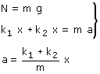
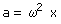
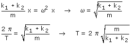

Consideramos el bloque en la posición de equilibrio
 |
En la posición de equilibrio los muelles no están deformados. No hay fuerzas tangenciales |
Llevamos el bloque a una distancia x de la posición de equilibrio. Con esto el muelle 1 se alarga una distancia x y tira del bloque hacia la izquierda y el muelle 2 se comprime una distancia x y empuja al bloque hacia la izquierda
|
|
 |


El sentido de la aceleración es contrario a la elongación (Separación de la posición de equilibrio) y su módulo es proporcional a esta. Estas dos características son típicas del movimiento armónico
En Cinemática el módulo de la aceleración de un movimiento armónico vale:

(Se ha suprimido el signo menos porque se trata de un módulo)
Evidentemente el módulo de la aceleración calculada en Dinámica tiene que ser igual al módulo de la aceleración calculada en Cinemática:
